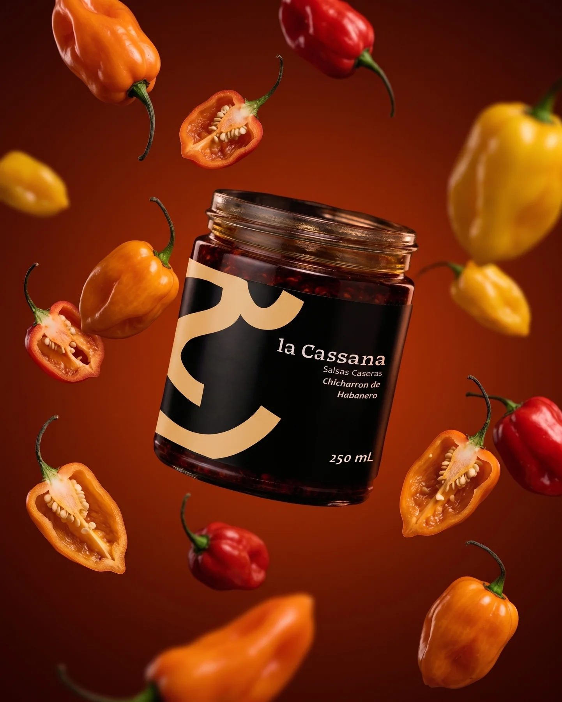
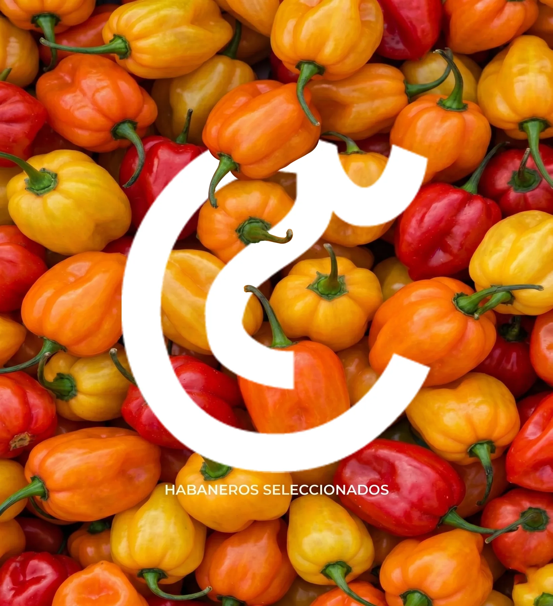
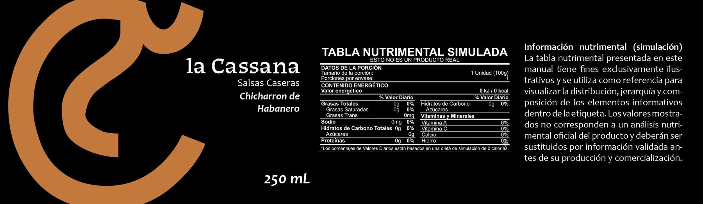
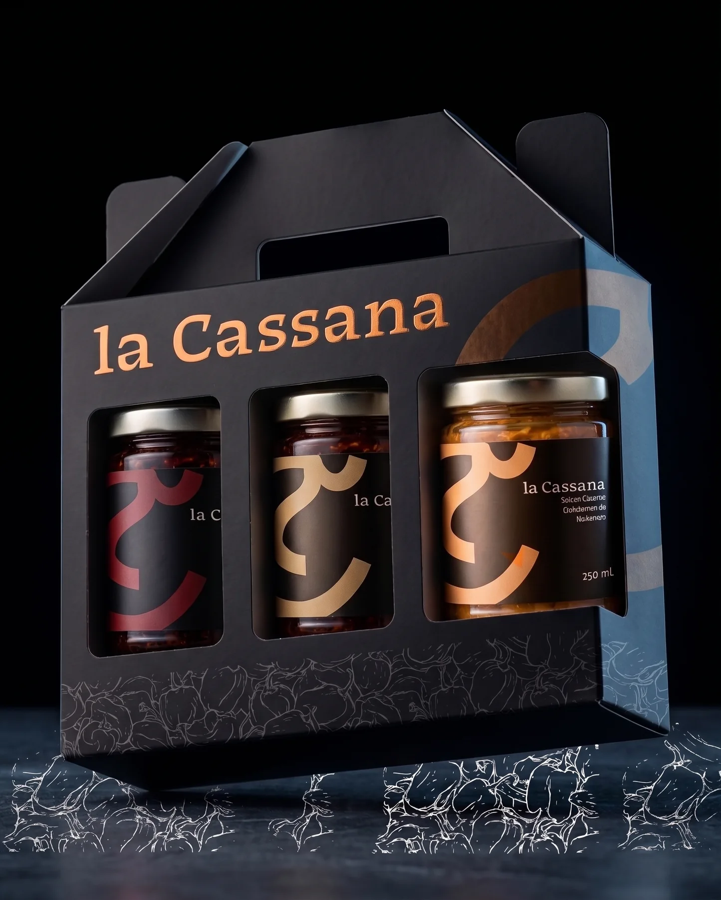
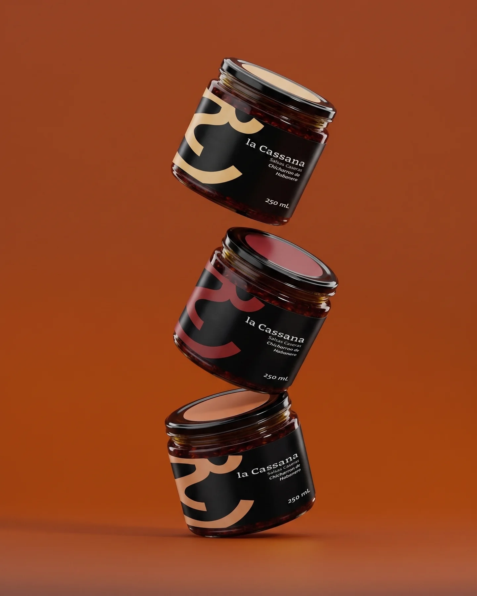
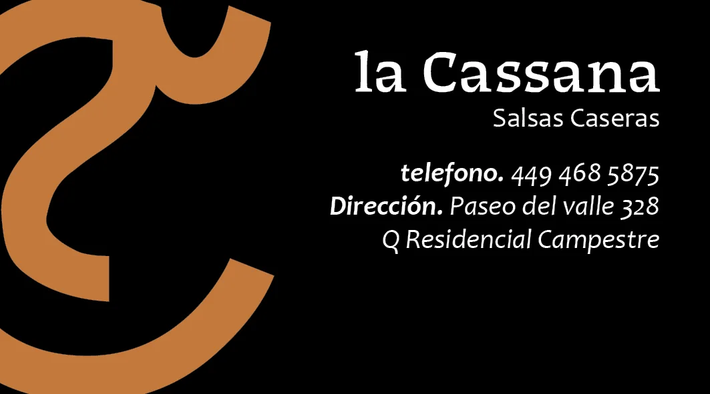
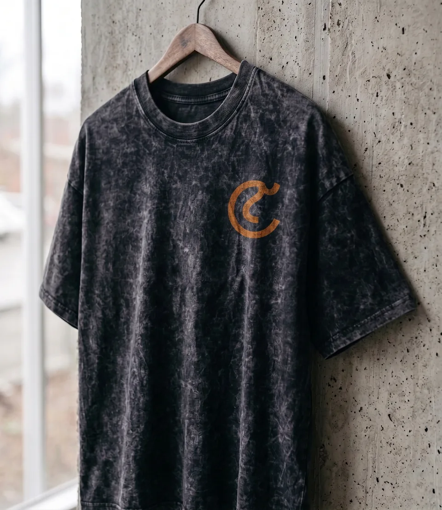
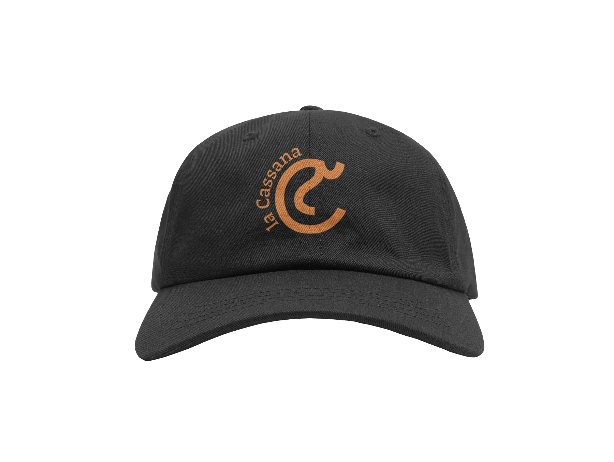
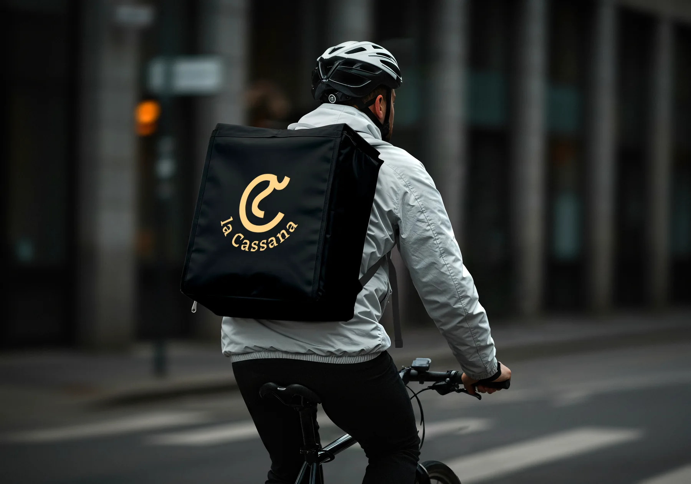

Crear momentos
memorables.
Salsas artesanales de alta calidad que transforman lo cotidiano con ingredientes seleccionados e identidad propia.
SALSAS CASERAS / MÉXICO
Tradición en cada receta.
Identidad en cada detalle.

01. NUESTRA ESENCIA
Es una historia que comienza en casa y termina en tu mesa.
La Cassana nace de la intención de crear salsas que se recuerden. Inspirada en la pasión por la cocina, el carácter de los ingredientes mexicanos y una estética contemporánea que honra la tradición de las recetas caseras.
Su nombre es un homenaje de Mafer, fundadora de la marca, a su hija Cassandra. Una identidad que lleva una historia familiar en cada frasco.
Salsas artesanales de alta calidad que transforman lo cotidiano con ingredientes seleccionados e identidad propia.
Ser una marca referente de salsas artesanales en México, sin perder su esencia independiente y familiar.
“Las mejores historias comienzan en casa.”
02. EL SIGNO DISTINTIVO
El logotipo combina lo casero y lo contemporáneo. Su «C» capitular incorpora un gesto orgánico que evoca raíces y ramas, con una personalidad sobria, flexible y reconocible.
La forma del símbolo conserva su personalidad incluso sin acompañarse del nombre.
Las variantes compositivas se utilizan según el soporte y la escala.
Evitar deformaciones, cambios arbitrarios de proporción y contrastes insuficientes.
03. SISTEMA TIPOGRÁFICO
Contrastes marcados, personalidad y una apariencia que combina lo clásico con lo inesperado. HAZ CLIC SOBRE LAS LETRAS PARA EDITARLAS.
Humanista, abierta y legible. Pensada para subtítulos, información práctica y textos corridos.
04. NUESTRA PALETA
Cuatro tonos que representan la calidez, la intensidad y la autenticidad de nuestros sabores. Selecciona cualquier color para copiar su código HEX.
05. UNIVERSO GRÁFICO
El patrón, los contrastes, la fotografía de producto y las variantes del símbolo crean un lenguaje reconocible a través de todos los puntos de contacto.


06. APLICACIONES REALES
La identidad se transforma en una experiencia tangible: desde el frasco hasta la indumentaria, cada detalle habla el mismo lenguaje.





